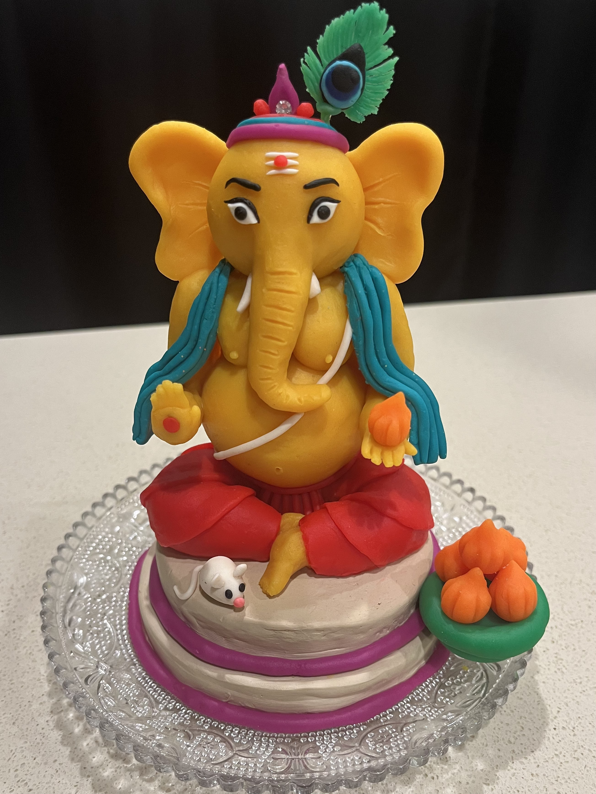
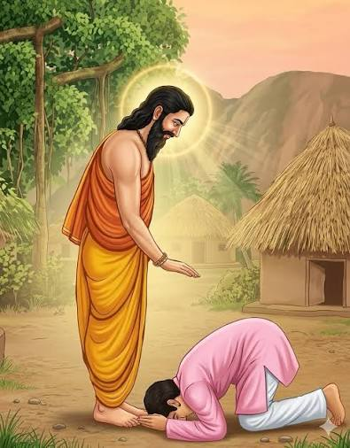
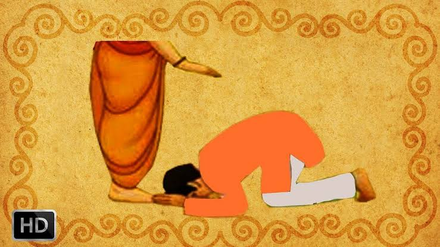
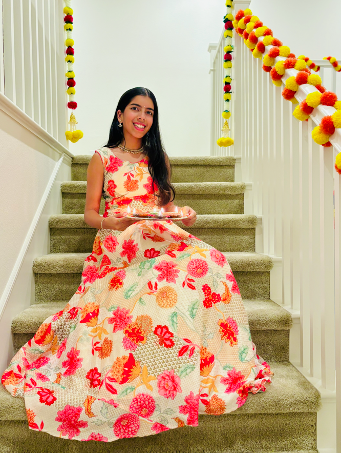
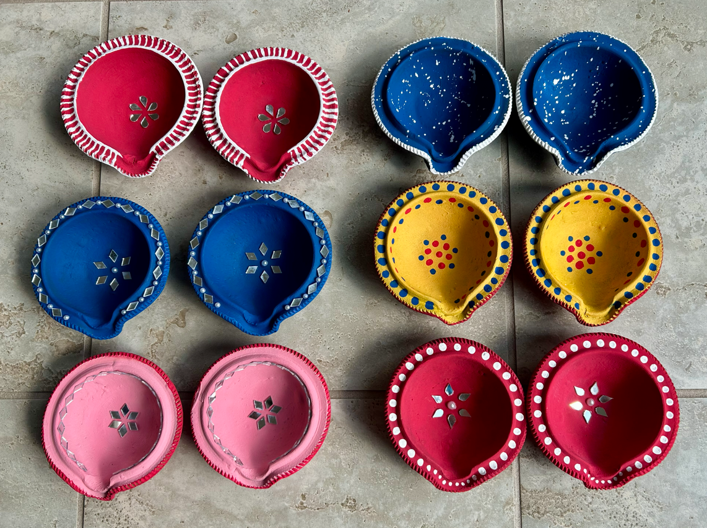
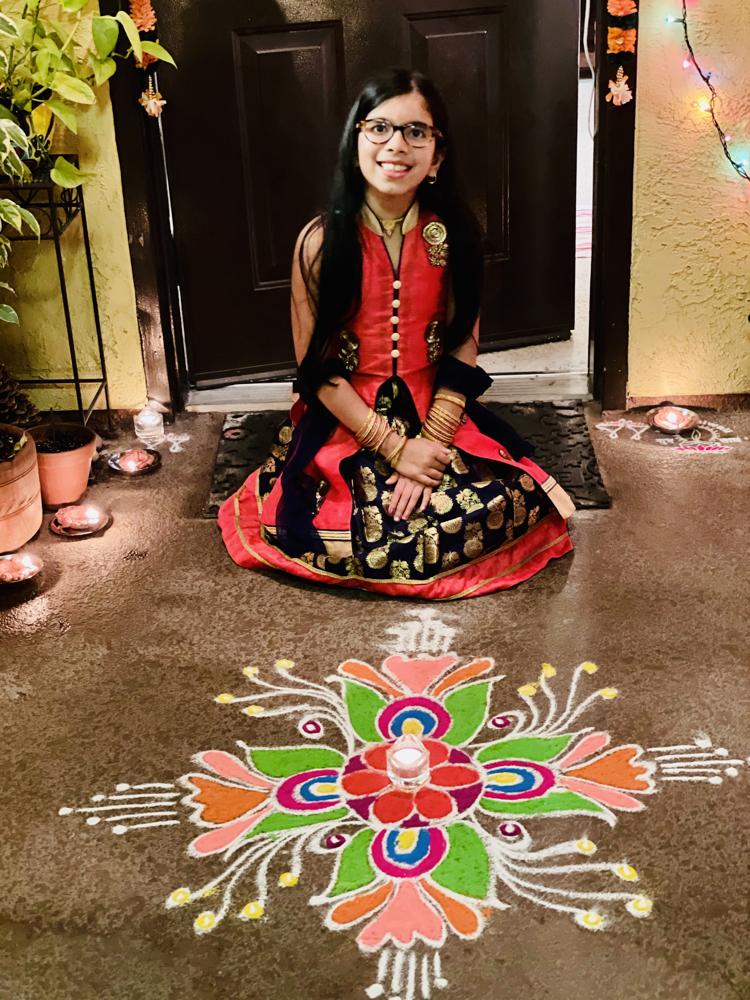
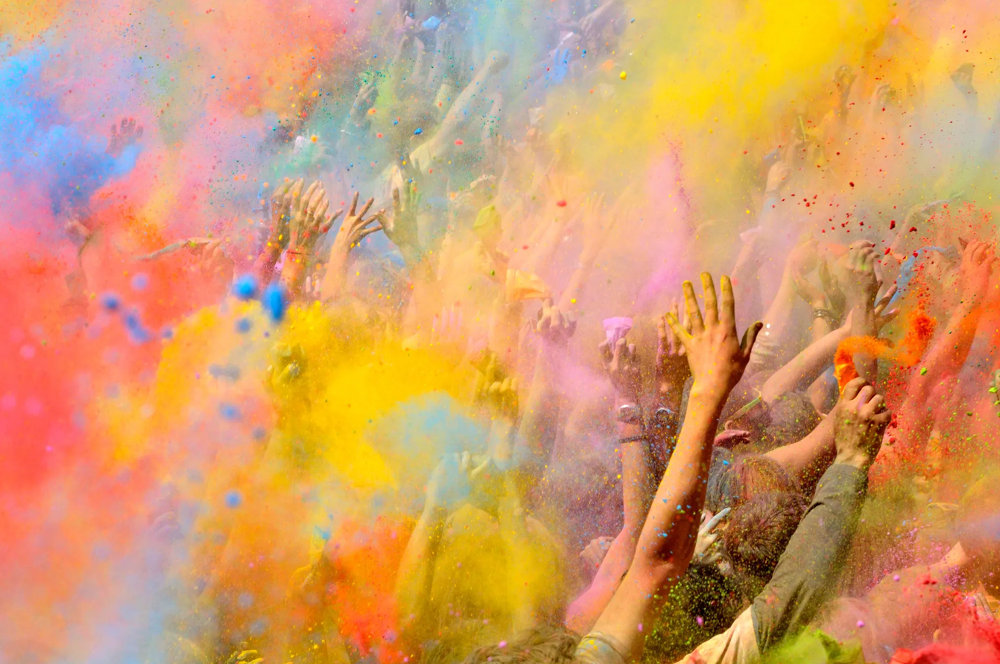
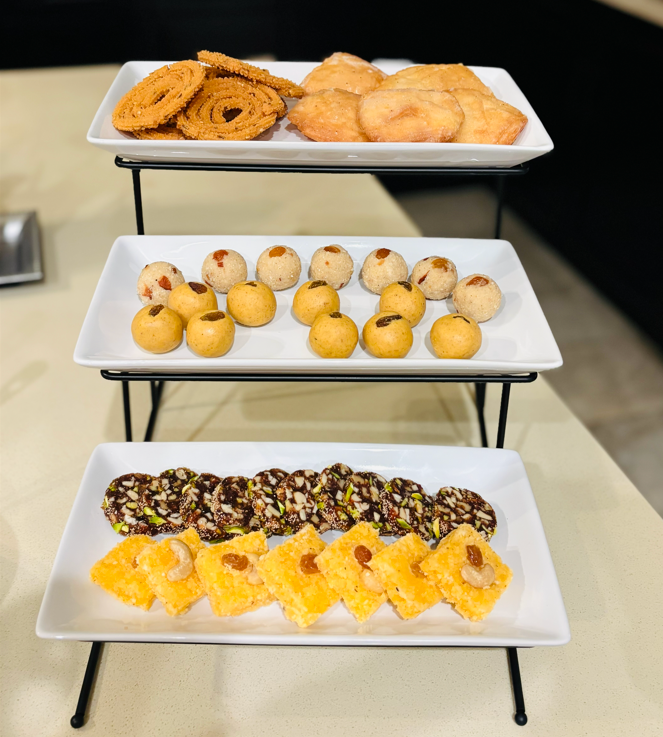
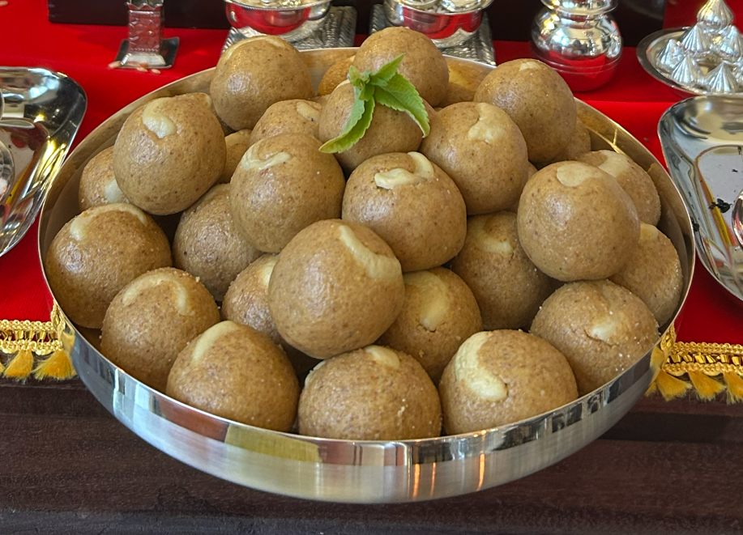
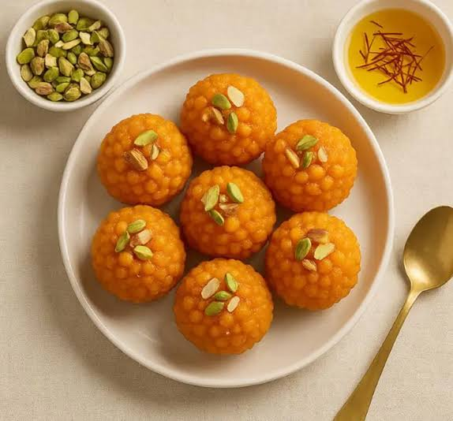

My Artifact: Lord Ganesha Sculpture

FinishedClick the arrows to see the stages of making the artifact!
This sculpture, which I created from Play Doh and clay, represents the traditional Hindu deity Lord Ganesha. The artifact represents a Hindu celebration, as well as Hindu religious beliefs.
As the story goes, Goddess Parvati (wife of Lord Shiva) created a young boy from turmeric paste and gave him life to watch the door and prevent anyone from coming in while she took a bath. When Lord Shiva came home, the boy mistakenly tried to block him from entering, and Shiva cut the boy's head off in anger. Parvati felt sorrow and rage when she understood what had happened, and told Shiva to fix his wrongdoings. Shiva sent his helpers to retrieve the head of the first sleeping animal they could find, and they quickly returned with the head of an elephant, which Shiva placed on the boy to bring him back to life. Shiva named him Ganesha and said people would first pray to him before starting anything new.
Honored in almost all Hindu rituals and ceremonies, Ganesha is Vighnaharta, the remover of obstacles, and the lord of wisdom, prosperity, and new beginnings. He is typically depicted with the head of an elephant, a round human-like body, and four arms. The different elements of the sculpture represent essential parts of Hindu culture: his large ears illustrate the importance of listening before speaking, his round belly symbolizes the ability to digest all of life's experiences (good and bad) with composure, and his broken tusk represents sacrifice (as according to legend, Ganesha used this tusk to write down the Mahabharata, one of India's major sacred texts, when his pen broke).
Every year, my family celebrates Ganesh Chaturthi, a festival honoring the birth of Lord Ganesha. During this religious holiday, it is customary to create a clay idol of Ganesha, much like the one Parvati created in the original story, to symbolize his arrival to Earth. After honoring the deity for multiple days with chants, flowers, and sweet offerings, the idol must be submerged and dissolved in water to symbolize Ganesha's departure back to his divine home; the purpose of this is to remind devotees that all physical forms are temporary, while the atman (soul) merges back with Brahman (the supreme consciousness). The image depicts my family's Ganesha this year, as Ganesh Chaturthi will take place in mid-September.
Since I was four years old, I've been creating an idol of Lord Ganesha each year. When I was little, the act of visarjan (dissolving the Ganesha) made me sad because I couldn't keep the artifact that I spent hours making. However, as I grew older, I understood that the celebration was more important to me than any other Hindu holiday solely because of the process of making the Ganesha. This tradition in my family lasts year after year, not because of the clay Ganesha itself, but because of how the process of creating his form evolved over the years (as my sculpting skills improved and my vision of the deity changed). Part of my identity as a Hindu is proven by the dedication it takes to sit down each year, no matter how busy I am, and make another clay Ganesha. Ganesha has taught me that I can pour my time and effort into something I love, and still have the strength to let it go and eagerly begin again the next year.
Past Ganeshas I've Made
 2025
2025 2024
2024 2023
2023 2022
2022 2020
2020 2019202520242023202220202019
2019202520242023202220202019Features of Culture
Values and customs: Respect for Elders


Respecting one's elders is a value that is deeply ingrained in Hindu culture. Whenever somebody is older than yourself, it is expected that you show them utmost respect and kindness, by both your physical actions and your verbal conversation. Hindu scriptures teach that parents and teachers guide souls through life: in the Taittiriya Upanishad, it says "matrudevo bhava, pitrudevo bhava, acharyadevo bhava," which means you should honor your mother, father, and teacher as God.
Thus, younger individuals are expected to touch the feet of elders in a process known as charan sparsh; this physical gesture shows respect, humility, and that you are seeking blessings from the older individual. Bending down to touch someone's feet lowers your body beneath them, which symbolizes getting rid of your ego and acknowledging that the older person has more experience and wisdom. Since elders (parents, teachers, and other individuals) are seen as sources of knowledge and love, honoring their feet recognizes that they have set a foundation for the younger individual to thrive and grow.When the younger individual bows down, the elder will place their right hand on the youth's head, providing them blessings. In Hindu belief, this cycle (where the youth is touching the elder's feet, and the elder the youth's head) creates a circuit of positive energy and wisdom.
This cultural emphasis on respecting elders is given such intense importance in Hinduism that it directly alters the structure of Indian languages. In any of the various languages in India (such as Marathi, which I speak, or Hindi, the official language of India) speaking to a parent or older relative will affect the way you refer to the person, the verbs you associate with them, and any item in their possession. In Marathi, if referring to a younger person as "you," you can call them "tu," but if speaking to an elder, it's expected that you call them "tumhi" (to show respect). In Hindi, when talking to an elder, it's common to add "ji" after the person's name or title as a sign of respect. In many languages, you will also refer to them in the third person plural to show reverence. Younger speakers address older individuals using terms like "uncle" or "auntie" even if not directly related, because it creates a more trusting connection and shows the individual that they are part of your community.
Touching an elder's feet has become ritual to me: I do it every time a family member performs ovalani (a ritual where a lamp is waved in front of a person, usually for a festival or ceremony, to ward off evil spirits and allow for prosperity), whenever I walk into a relative's house, or before an exam or competition. When I was first learning Marathi, my mom often had to correct me when I accidentally called an elder "tu" instead of "tumhi," and I used to complain (a lot) about why they couldn't just be the same; over time, it became second nature to use the plural form. Respecting my elders became an unconscious part of my identity, allowing me to see anyone older than me as somebody worthy of respect.
Holidays and celebrations: Diwali and Holi




Hinduism is characterized by various holidays and celebrations, each of which connect to Hindu religious beliefs. Apart from Ganesh Chaturthi, which I described above, two other important celebrations observed each year are Diwali and Holi. Both of these festivals celebrate the triumph of good over evil.
According to legend, Diwali marks the return of Lord Rama to Ayodhya after fourteen years of exile as detailed in the Ramayana (the other ancient epic poem of India, along with the Mahabharata). Rama defeated the demon king Ravana, upon which he returned to his home city of Ayodhya with his brother (Lakshmana) and his wife (Sita). The people of Ayodhya lit rows of diyas, or clay oil lamps, to guide their rightful king home, which is why Diwali is often called the "Festival of Lights."
In my culture, we celebrate Diwali by placing oil lamps around and outside the home to welcome divine light and prosperity. We pray to Lakshmi, the goddess of wealth, and Lord Ganesha to invite good fortune. Every year, I help clean and decorate the house with flower garlands and rangoli (patterns on the floor drawn with colorful sand), which are said to invite Lakshmi and wealth inside the home. Handheld sparklers and larger fireworks are also used to celebrate, as they celebrate the triumph of light over darkness (and good over evil, as Rama defeated Ravana). However, the most important of Diwali (at least for me) is the exchange of sweets, which symbolize joy and the sharing of good fortune with family and friends. During Diwali, I wear new traditional clothes and treat myself to as many sweets as I can possibly have!
Holi, on the other hand, is a spring festival known as the "Festival of Colors" that celebrates the burning of the demon Holika in ancient Hindu mythology. The story of Holika is detailed in Hindu sacred texts, the Bhagavata Purana and the Narada Purana. In the story, the demon king Hiranyakashipu's son, Prahlad, refused to worship his father and instead remained devoted to Lord Vishnu (the god of preservation and protection who maintains order and balance). This angered Hiranyakashipu, who asked his sister (Holika) to sit in a massive fire with Prahlad. Holika supposedly had a boon that would prevent her from burning, while Prahlad was supposed to go up in flames. However, because of divine protection (and the fact that Holika was using her boon for evil purposes), Prahlad survived the flames, while Holika burned to death. (Hiranyakashipu was later slain by the fourth avatar of Lord Vishnu).
Holi is celebrated using colorful powders known as gulal and water, which are smeared onto family, friends, and strangers alike in a huge celebration. Music and dance accompany the playfighting and celebrate. Holi is a time to forgive past mistakes and fix broken relationships. To me, this festival each year serves to bring the community together. Celebrating Holi with my family and friends is a yearly tradition that I hope will never be lost. Holi and Diwali are essential to my identity as a Hindu because they remind me to always act with goodwill and kindness towards others, as well as strengthen bonds with family and friends.
Food: Ladoos



In Hinduism, food is a way to bring the community together, and reminders of love and support that can be shared amongst family and friends. Ladoos are a core part of this vibrant culture. Their round shape symbolizes wholeness and unity, and they are used as sacred offerings or prasad to invite divine blessings. They are often offered to Lord Ganesha or Goddess Lakshmi.
My family makes ladoos for most Hindu occasions, but Diwali is the festival during which I am most involved in making them. During Diwali, my family makes Diwali faral, which is an assortment of homemade sweet and savory goods made especially for Diwali. Out of the various goods we make, ladoos are definitely the most popular in my family, and this is true for the entirety of India as well (it is one of the most popular and iconic sweet treats!).
Ladoos go back centures in South Asia, where they were connected to Ayurvedic preparations and were a form of medicinal and nutritional energy that was long-lasting and portable. Today, there are so many different kinds of ladoos, defined by the ingredients used to make them. My favorite ladoos are boondi ladoos, which are made of tiny balls of besan called boondi shaped into a larger spherical shape. My family typically makes besan ladoos and rava ladoos for any special occasion.
Rolling the ladoos into perfectly round balls is a technique that I haven't yet mastered. Whenever I help my mom roll ladoos, she always has tips for me on how to create the perfect shape: rub some ghee (butter) onto my hands beforehand, start rolling when the batter is still hot, and squeeze the batter to make it compact before rolling it into a spherical shape. She got these tips from her mother, who got it from her grandmother; it's an honor for me to be able to learn these techniques and hopefully one day pass them down as well.